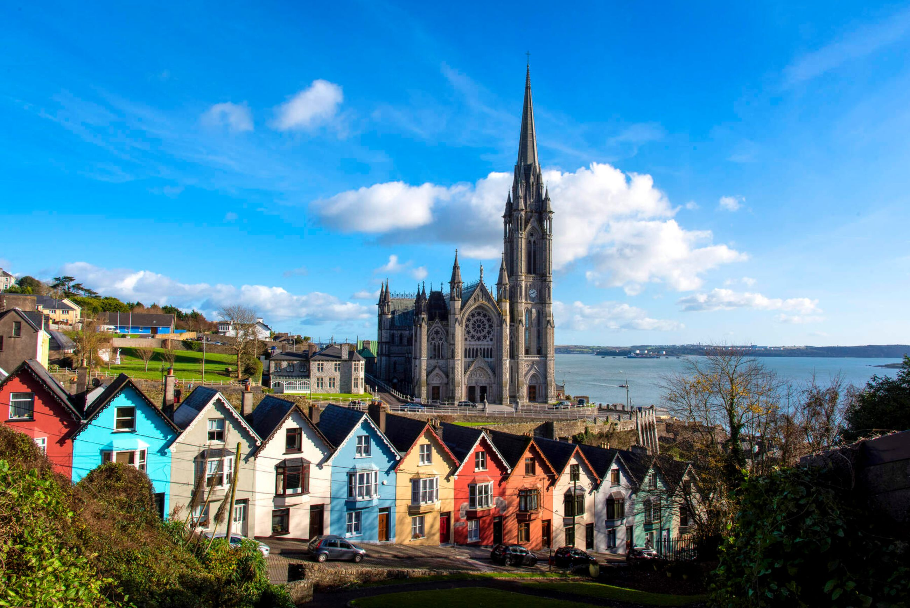

Cork is a vibrant city in southern Ireland. It is known for its rich culture, historic architecture, and lively atmosphere.
Visitors enjoy street festivals, local cuisine, historic buildings, and Cork Harbour.
